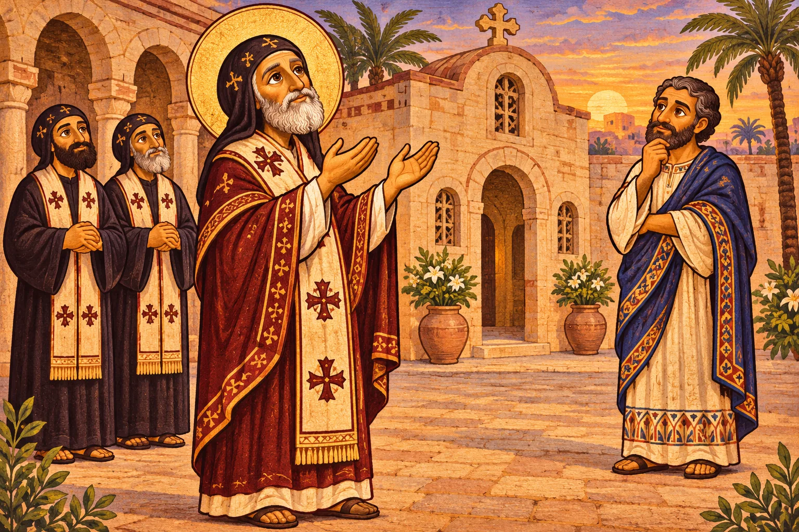

01
A SHEPHERD FOR ANSENA
WHAT HAPPENED?
Choose an answer to continue the story.
St. Timothy served his people with faith. When he was set free after years of hardship, his prayer for the governor surprised everyone.
FROM THE COPTIC SYNAXARIUM · HATOR 13
TIMOTHY PRAYS FOR THE GOVERNORRead each moment, choose what happened, and see where St. Timothy’s prayer led.
Choose an answer to continue the story.
Timothy prayed even for someone who had hurt him. Think of a person who needs your prayer today.